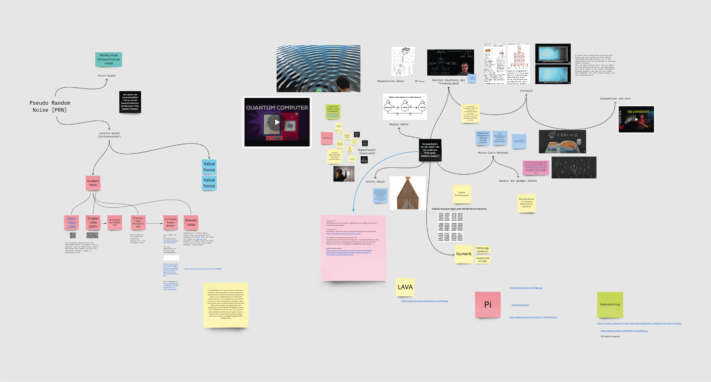
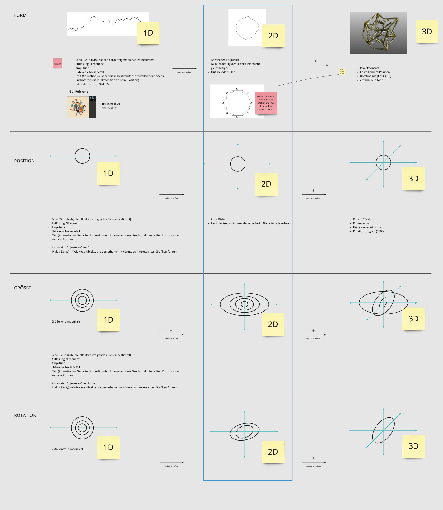
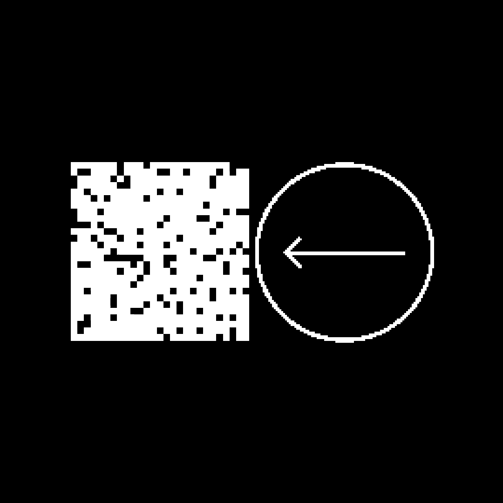
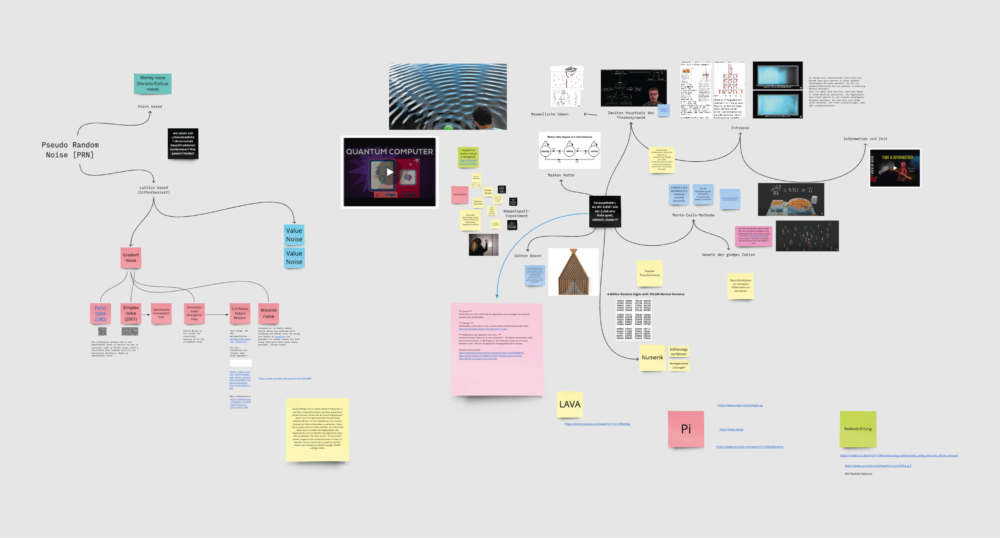
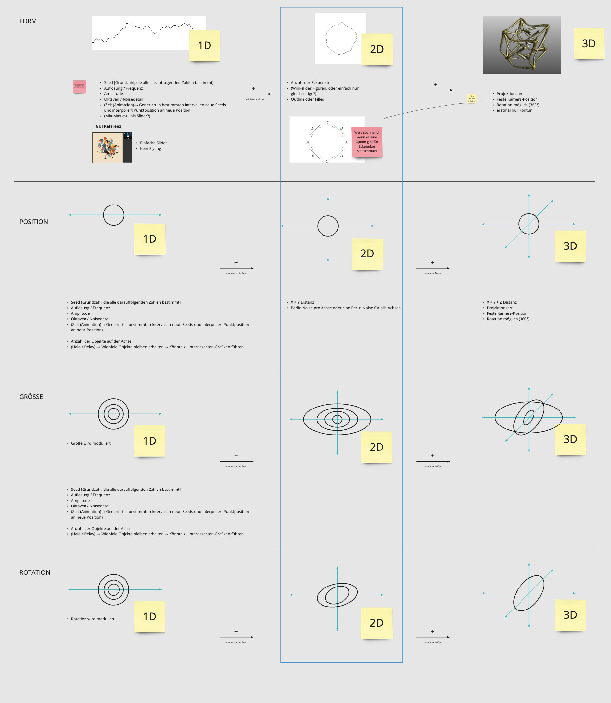
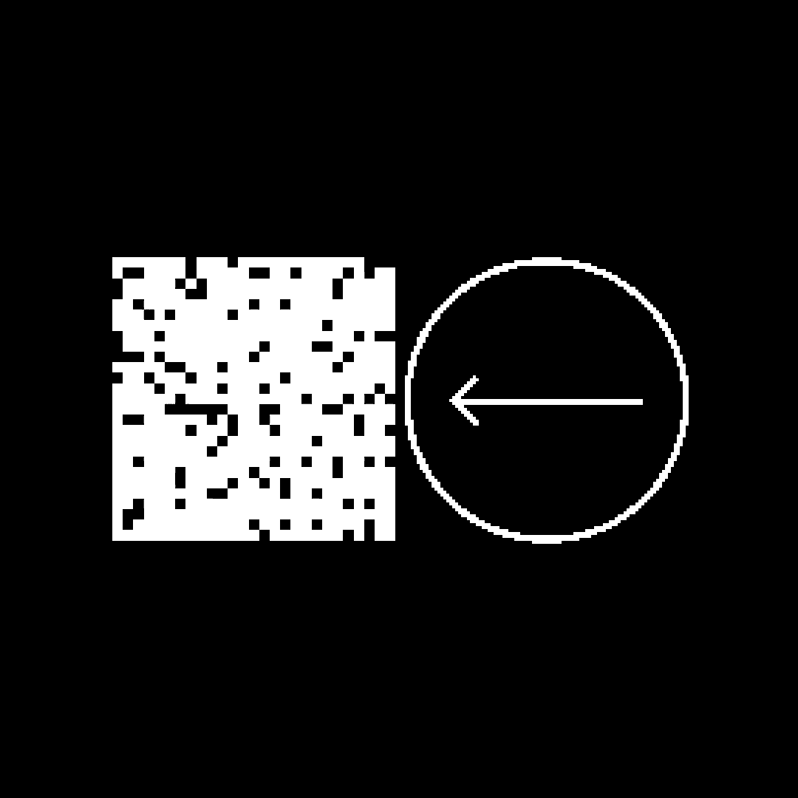

- RWNT
- Index of Noise
-
-
Index of Noise is an ongoing artistic research project by Berlin-based artist duo RWNT exploring and collecting visual phenomena generated by and through noise. The starting points are the eponymous project by Moritz Hundbiß and Robin Woern, and Superposed Patterns by Niklas Thran.
Instagram
-
Index of Noise is an ongoing artistic research project by Berlin-based artist duo RWNT exploring and collecting visual phenomena generated by and through noise. The starting points are the eponymous project by Moritz Hundbiß and Robin Woern, and Superposed Patterns by Niklas Thran.
-
 




